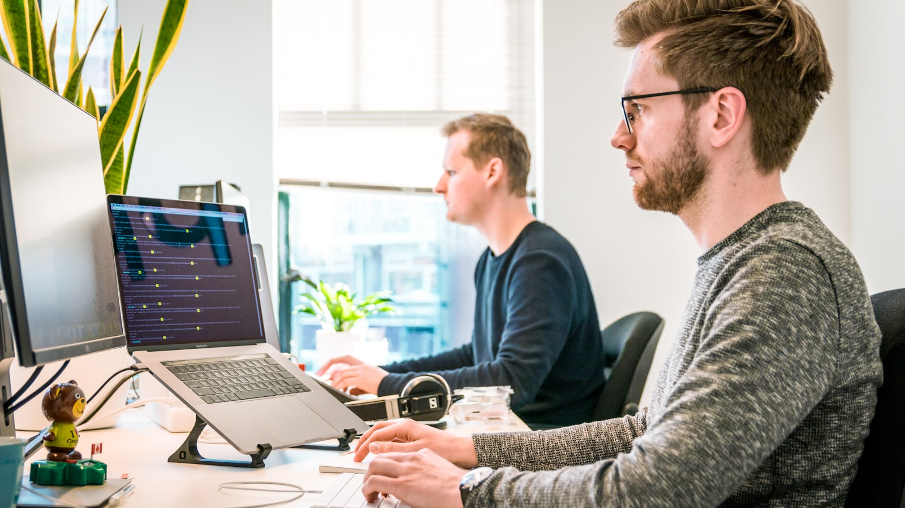

M&A 사건파일 · 실제 사례
한국 코스닥 시세조종·부정거래 사건 5선 — 1996~2024 확정 판결
루보·옵투스제약·신라젠·인보사·카카오 SM 시세조종 — 형사 확정 또는 진행 단계의 5건을 법원 판결문 기반으로 정리.
한국 자본시장에서 가장 끈질긴 패턴 — 기업사냥꾼·무자본 M&A·시세조종·거버넌스 실패. 본지 탐사보도팀의 탐사 시리즈.
루보·옵투스제약·신라젠·인보사·카카오 SM 시세조종 — 형사 확정 또는 진행 단계의 5건을 법원 판결문 기반으로 정리.

문은상 전 대표 사건 6년 사법 절차. 대법원 파기환송과 파기환송심까지 — 공개 판결문 기반 정리.

한국 코스닥에서 가장 오래되고 가장 정교한 작전 패턴.

주가 조작은 사라지지 않았다. 더 정교해졌을 뿐이다.

청약 경쟁률 1,000:1을 넘어가는 K-바이오 IPO의 이면.

한국 자본시장 거버넌스 개혁 5년의 평가.

한 합성 사례의 8년을 따라가다.